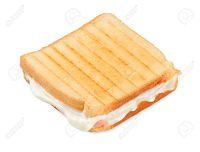
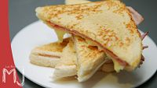

Presiona el boton inicio para regresar a la pagina anterior

Tostada de queso |
|
CEsta tostada esta elabora con rebanadas de pan especial para tostadas. El pan es opcional por el cliente puede ser pan normal o pan integrar ademas, se le aplica queso de mesa su precio es de 50 centavos. |

Ingredientes
1.-Revanada de pan |
Tostada de jamon |
|
Esta tostada esta elabora con rebanadas de pan especial para tostadas. El pan es opcional por el cliente puede ser pan normal o pan integrar ademas, se le aplica jamon de buena calidadsu precio es de 50 centavos |
 Ingredientes
Ingredientes
1.-Revanada de pan |
Tostada mixta |
|
CEsta tostada esta elabora con rebanadas de pan especial para tostadas. El pan es opcional por el cliente puede ser pan normal o pan integrar ademas, se le aplica queso de mesa su precio es de 50 centavos. |

Ingredientes
1.-Revamnada de pan |
¿Cómo hacaaer una deliciosa tostada en casa? |
|
Aqui tenemos la evidincia de como hacemos nuestros productos: |
|